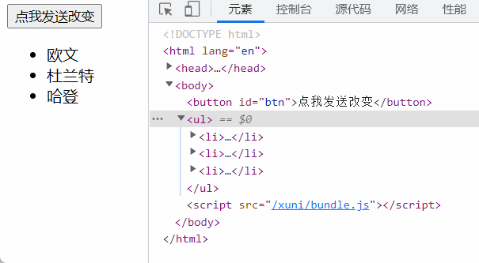
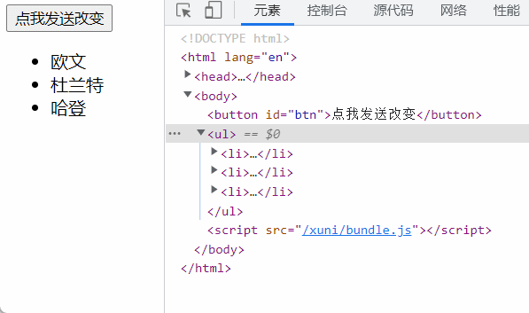
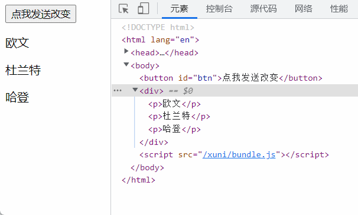
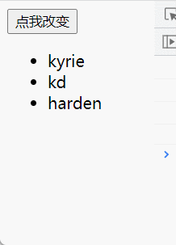
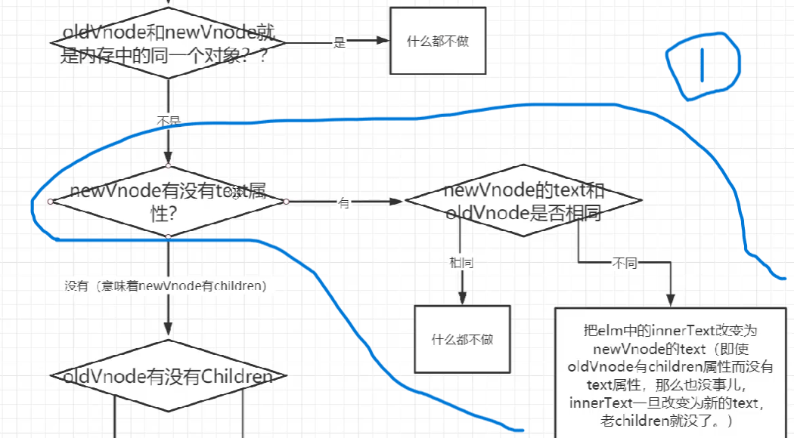

虚拟DOM和diff算法 学习路径：
snabbdom简介
snabbdom的h函数
diff算法原理
手写diff算法
snabbdom简介 snabbdom 是著名的虚拟DOM库，是diff算法的鼻祖，Vue源码借鉴了snabbdom
安装：
虚拟DOM和h函数 虚拟DOM
用JavaScript对象来描述dom的结构层次，dom中的一切属性都在虚拟dom中有对应的属性
新虚拟dom和老虚拟dom进行diff(精细化比较)，算出应该如何最小量更新，最后反映到真实dom上
h函数 h函数用来创建虚拟节点(vnode)
比如这样调用h函数：
1 h ('a' , {props : {href : 'www.kyriecqy.github.io' }}, 'cqy' )
将得到这样的虚拟节点：
1 {'sel' :'a' , 'data' : {props : {href : 'www.kyriecqy.github.io' }}, 'text' : 'cqy' }
它表示的真正的dom节点：
1 <a href ='www.kyriecqy.github.io' > cqy</a >
虚拟节点拥有的属性：
children：子元素
data：属性、样式等
elm：这个节点对应的真正的dom,是一个纯dom对象
key：节点的唯一标识
sel：这个节点的css选择器
text：文本内容
使用h函数创建虚拟dom演示：
1 2 3 4 var vnode = h ('a' , {props : {href : 'https://www.kyriecqy.github.io' }}, 'cqy' )console .log (vnode);
h函数还可以嵌套使用，从而得到虚拟dom树：
1 2 3 4 5 6 7 8 9 10 11 12 13 14 15 16 17 18 var vnode = h ('ul' , [ h ('li' , '欧文' ), h ('li' , '杜兰特' ), h ('li' , '哈登' ) ]) { "sel" : "ul" , "data" : '' , "children" : [ {"sel" : "li" , "data" : '' , "text" : "欧文" , "elm" : 'li' }, {"sel" : "li" , "data" : '' , "text" : "杜兰特" , "elm" : 'li' }, {"sel" : "li" , "data" : '' , "text" : "哈登" , "elm" : 'li' } ], "elm" : 'ul' }
使用snabbdom创建真实dom演示：
1 2 3 4 5 6 7 8 9 10 11 12 13 14 15 16 17 18 19 import {init} from 'snabbdom/init' import {classModule} from 'snabbdom/modules/class' import {propsModule} from 'snabbdom/modules/props' import {styleModule} from 'snabbdom/modules/style' import {eventListenersModule} from 'snabbdom/modules/eventlisteners' import {h} from 'snabbdom/h' const patch = init ([classModule,propsModule,styleModule,eventListenersModule])var vnode = h ('a' , {props : {href : 'https://www.kyriecqy.github.io' }}, 'cqy' )console .log (vnode);const container = document .getElementById ('container' )patch (container,vnode)
了解完h函数的基本用途和使用方法，接下来就是手写h函数
手写h函数 官方的h函数重载功能较强，即可以实现不同数量参数的传入
1 2 3 4 5 6 7 8 9 10 h ('div' )h ('div' , '一些文字' )h ('div' , [])h ('div' , h ())h ('div' , {}, '一些文字' )h ('div' , {}, [ 在里面嵌套h函数 ])h ('div' , {}, h ())
我们在之后手写的h函数必须传入三个参数，相当于一个低配版的官方h函数
1 2 3 h ('div' , {}, '一些文字' )h ('div' , {}, [ 在里面嵌套h函数 ])h ('div' , {}, h ())
下面是vnode函数和h函数的代码
1 2 3 4 5 6 export default function vnode (sel, data, children, text, elm ) { return { sel, data, children, text, elm } }
1 2 3 4 5 6 7 8 9 10 11 12 13 14 15 16 17 18 19 20 21 22 23 24 25 26 27 28 29 30 31 32 33 34 35 36 37 38 39 40 41 42 43 44 45 46 47 import vnode from './vnode' export default function h (sel, data, c ) { if (arguments .length != 3 ) { throw new Error ('这个h函数必须传入三个函数' ) } if (typeof c == 'string' || typeof c == 'number' ) { return vnode (sel, data, undefined , c, undefined ) } else if (Array .isArray (c)) { var children = [] for (let i=0 ; i<c.length ; i++) { if (!(typeof c[i] == 'object' && c[i].hasOwnProperty ('sel' ))) { throw new Error ('传入的数组中有项不是h函数' ) } children.push (c[i]) } return vnode (sel, data, children, undefined , undefined ) } else if (typeof c == 'object' && c.hasOwnProperty ('sel' )) { var children = [] children.push (c) return vnode (sel, data, children, undefined , undefined ) } else { throw new Error ('第三个参数传入的不对' ) } }
在index.js中来测试h函数
1 2 3 4 5 6 7 8 9 10 import h from './mysnabbdom/h' var myVnode = h ('div' , {}, [ h ('p' , {}, '欧文' ), h ('p' , {}, '杜兰特' ), h ('p' , {}, h ('div' , {}, '哈登' )), ]) console .log (myVnode);
控制台打印的结果：我们成功的生成了虚拟dom节点
diff算法 体验diff算法 先使用官方的方法来调用h函数等生成虚拟dom并完成真实dom的转化：
1 2 3 4 5 6 7 8 9 10 11 12 13 14 15 16 17 18 19 20 21 22 23 24 25 26 27 28 29 30 31 32 33 34 import {init} from 'snabbdom/init' import {classModule} from 'snabbdom/modules/class' import {propsModule} from 'snabbdom/modules/props' import {styleModule} from 'snabbdom/modules/style' import {eventListenersModule} from 'snabbdom/modules/eventlisteners' import {h} from 'snabbdom/h' const patch = init ([classModule,propsModule,styleModule,eventListenersModule])var vnode1 = h ('ul' , {}, [ h ('li' , {}, '欧文' ), h ('li' , {}, '杜兰特' ), h ('li' , {}, '哈登' ) ]) const container = document .getElementById ('container' )patch (container,vnode1)var vnode2 = h ('ul' , {}, [ h ('li' , {}, '欧文' ), h ('li' , {}, '杜兰特' ), h ('li' , {}, '哈登' ), h ('li' , {}, 'cqy' ) ]) const btn = document .getElementById ('btn' )btn.onclick = function ( patch (vnode1, vnode2) }
情景一：
现在我们改变一下vnode2，与vnode1相比在它的头部添加一项数据
1 2 3 4 5 6 7 var vnode2 = h ('ul' , {}, [ h ('li' , {}, 'cqy' ), h ('li' , {}, '欧文' ), h ('li' , {}, '杜兰特' ), h ('li' , {}, '哈登' ), ])
来看看这次按下按钮之后控制台的变化：将新的数据添加在前面时，所有的li都进行了重新渲染，好像看上去diff算法也没这么厉害，其实是我们没有给他加上key，在之前我们说过，key是节点的唯一标识
再来看看加上key属性之后的变化：这个时候它就好像认识了每个节点一样，对比vnode1和vnode2，只在开头增加了一项，没有改变其他
1 2 3 4 5 6 7 8 9 10 11 12 13 14 var vnode2 = h ('ul' , {}, [ h ('li' , {key : 'a' }, '欧文' ), h ('li' , {key : 'b' }, '杜兰特' ), h ('li' , {key : 'c' }, '哈登' ), ]) var vnode2 = h ('ul' , {}, [ h ('li' , {key : 'd' }, 'cqy' ), h ('li' , {key : 'a' }, '欧文' ), h ('li' , {key : 'b' }, '杜兰特' ), h ('li' , {key : 'c' }, '哈登' ), ])

key十分关键，key服务于最小量更新，key可以大大提高diff算法的效率
情景二：
1 2 3 4 5 6 7 8 9 10 11 var vnode2 = h ('ul' , {}, [ h ('li' , {}, '欧文' ), h ('li' , {}, '杜兰特' ), h ('li' , {}, '哈登' ), ]) var vnode2 = h ('ol' , {}, [ h ('li' , {}, '欧文' ), h ('li' , {}, '杜兰特' ), h ('li' , {}, '哈登' ), ])
只有是同一个虚拟节点(选择器相同且key相同)，才进行精细化比较，如果不是同一个虚拟节点，直接暴力销毁重新渲染
情景三：
因为diff算法只进行同层比较，不会进行跨层比较 div，但vnode1的第二层是一系列的p，而vnode2的第二层是div，他的第三层才是一系列p；
1 2 3 4 5 6 7 8 9 10 11 12 13 14 15 var vnode1 = h ('div' , {}, [ h ('p' , {key : 'a' }, '欧文' ), h ('p' , {key : 'b' }, '杜兰特' ), h ('p' , {key : 'c' }, '哈登' ) ] ) var vnode2 = h ('div' , {}, h ('div' , {}, [ h ('p' , {key : 'a' }, '欧文' ), h ('p' , {key : 'b' }, '杜兰特' ), h ('p' , {key : 'c' }, '哈登' ) ]) )

这么看下来diff算法好像也不是很精细化，但其实上面场景二、三一般不会出现，属于合理的优化
手写第一次上树 第一次上树就是老的vnode是一个真实的dom节点，我们第一次将虚拟dom变成真实dom节点的过程
先用一个简单的数据(有的是文本不是子节点)来进行手写
1 2 3 4 5 6 7 8 import h from './mysnabbdom/h' import patch from './mysnabbdom/patch' const container = document .getElementById ('container' )const vnode = h ('h1' , {}, '凯里欧文' )patch (container, vnode)
1 2 3 4 5 6 7 8 9 10 11 12 13 14 15 16 17 18 19 20 21 export default function createElement (vnode ) { console .log (vnode); let domNode = document .createElement (vnode.sel ) console .log (domNode); if (vnode.text != '' && (vnode.children == undefined || vnode.children .length == 0 )) { domNode.innerText = vnode.text } vnode.elm = domNode return domNode }
1 2 3 4 5 6 7 8 9 10 11 12 13 14 15 16 17 18 19 20 21 22 23 24 25 26 27 28 import vnode from "./vnode" ;import createElement from "./createElement" ;export default function patch (oldVnode, newVnode ) { if (oldVnode.sel == '' || oldVnode.sel == undefined ) { oldVnode = vnode (oldVnode.tagName .toLowerCase (), {}, [], undefined , oldVnode) } if (oldVnode.sel == newVnode.sel && oldVnode.key == newVnode.key ) { console .log ('yes' ); } else { let newVnodeElm = createElement (newVnode) if (oldVnode.elm .parentNode && newVnodeElm) { oldVnode.elm .parentNode .insertBefore (newVnodeElm, oldVnode.elm ) } } }
得到的结果：
当有子节点的情况
1 2 3 4 5 6 7 8 9 10 11 12 import h from './mysnabbdom/h' import patch from './mysnabbdom/patch' const container = document .getElementById ('container' )const vnode = h ('ul' , {}, [ h ('li' , {}, 'kyrie' ), h ('li' , {}, 'kd' ), h ('li' , {}, 'harden' ), ]) patch (container, vnode)
1 2 3 4 5 6 7 8 9 10 11 12 13 14 15 16 17 18 19 20 21 22 23 24 25 26 27 28 29 30 export default function CreateElement (vnode ) { console .log (vnode); let domNode = document .createElement (vnode.sel ) if (vnode.text != '' && (vnode.children == undefined || vnode.children .length == 0 )) { domNode.innerText = vnode.text } else if (Array .isArray (vnode.children ) && vnode.children .length > 0 ) { for (let i = 0 ; i < vnode.children .length ; i++) { let ch = vnode.children [i] console .log (ch); let chDom = CreateElement (ch) domNode.appendChild (chDom) } } vnode.elm = domNode return domNode }
1 2 3 4 5 6 7 8 9 10 11 12 13 14 15 16 17 18 19 20 import vnode from "./vnode" ;import CreateElement from "./createElement" ;export default function patch (oldVnode, newVnode ) { if (oldVnode.sel == newVnode.sel && oldVnode.key == newVnode.key ) { console .log ('yes' ); } else { let newVnodeElm = CreateElement (newVnode) if (oldVnode.elm .parentNode && newVnodeElm) { oldVnode.elm .parentNode .insertBefore (newVnodeElm, oldVnode.elm ) } } }
得到的结果：
新旧节点不是同一个节点 其实上述代码中我们也实现了新旧节点不是同一个节点的情况，因为当新旧节点不是同一个节点时，diff算法并不进行精细化比较，而是暴力拆除和重新渲染
1 2 3 4 5 6 7 8 9 10 11 12 13 14 15 16 17 18 19 20 21 22 23 24 import h from './mysnabbdom/h' import patch from './mysnabbdom/patch' const container = document .getElementById ('container' )const vnode = h ('ul' , {}, [ h ('li' , {}, 'kyrie' ), h ('li' , {}, 'kd' ), h ('li' , {}, 'harden' ), ]) patch (container, vnode)const vnode2 = h ('div' , {}, [ h ('p' , {}, '欧文' ), h ('p' , {}, '杜兰特' ), h ('p' , {}, '哈登' ), ]) const btn = document .getElementById ('btn' )btn.onclick = function ( patch (vnode, vnode2) }

新老节点是同一个节点 
新节点有text属性时 在这种情况下，并不用关心老节点是text属性还是children属性，假设老节点也有text属性，新老节点的text属性相同就不进行改变，不相同就将新节点的text属性插入到老节点身上
1 2 3 4 5 6 7 const vnode = h ('section' , {}, [ h ('h4' , {}, 'kyrie' ), h ('h4' , {}, 'kd' ), h ('h4' , {}, 'harden' ), ]) const vnode2 = h ('section' , {}, '我是新节点' )
1 2 3 4 5 6 7 8 9 10 11 12 13 14 15 16 17 18 19 20 21 22 23 export default function patch (oldVnode, newVnode ) { if (oldVnode.sel == newVnode.sel && oldVnode.key == newVnode.key ) { if (newVnode.text != undefined && (newVnode.children == undefined || newVnode.children .length == 0 )) { if (oldVnode.text != newVnode.text ) { oldVnode.elm .innerText = newVnode.text } } else { } } else { } }
得到的结果：这个就是流程图中的1部分判断
老节点有text属性，新节点有children时 在这种情况下，清空老节点的内容，将新节点的children创建成真实dom之后插入到老节点中
1 2 3 4 5 6 7 const vnode = h ('section' , {}, '凯里欧文' )const vnode2 = h ('section' , {}, [ h ('p' , {}, 'kyrie' ), h ('p' , {}, 'kd' ), h ('p' , {}, 'harden' ) ])
1 2 3 4 5 6 7 8 9 10 11 12 13 14 15 16 17 18 19 20 21 22 23 24 25 26 27 28 29 30 export default function patch (oldVnode, newVnode ) { if (oldVnode.sel == newVnode.sel && oldVnode.key == newVnode.key ) { if (newVnode.text != undefined && (newVnode.children == undefined || newVnode.children .length == 0 )) { } else { if (oldVnode.children != undefined && oldVnode.children .length > 0 ) { } else { oldVnode.elm .innerHTML = '' for (let i=0 ; i<newVnode.children .length ; i++) { let dom = CreateElement (newVnode.children [i]) oldVnode.elm .appendChild (dom) } } } } else { } }
得到的结果：这个就是流程图中的2部分判断
为了方便阅读，我们将patch中时是同一个节点的模块抽离出去，成为一个新的函数再引入进来
1 2 3 4 5 6 7 8 9 10 11 12 13 14 15 16 17 18 19 20 21 22 23 24 25 26 27 28 29 30 import CreateElement from "./createElement" export default function patchVnode (oldVnode, newVnode ) { if (newVnode.text != undefined && (newVnode.children == undefined || newVnode.children .length == 0 )) { if (oldVnode.text != newVnode.text ) { oldVnode.elm .innerText = newVnode.text } } else { if (oldVnode.children != undefined && oldVnode.children .length > 0 ) { } else { oldVnode.elm .innerHTML = '' for (let i=0 ; i<newVnode.children .length ; i++) { let dom = CreateElement (newVnode.children [i]) oldVnode.elm .appendChild (dom) } } } }
diff算法更新子节点策略 四种命中查找：
新前与旧前
新后与旧后
新后与旧前
新前与旧后
所谓新前就是新节点中所有没有处理的节点的最前面
四种命中方式从上到下依次判断，命中一个就不再向下判断
前指针只会下移，后指针只会上移，且保证前指针一定在后指针前(新前 <= 新后 && 旧前 <= 旧后)
新节点有新增的情况
首先判断新前(a)和旧前(a)，发现完全相同，命中1号查找方式，将旧前变成真实dom，新前、旧前指针下移
判断新前(b)和旧前(b)，发现完全相同，命中1号查找方式，将旧前变成真实dom，新前、旧前指针下移
判断新前(c)和旧前(c)，发现完全相同，命中1号查找方式，将旧前变成真实dom，新前、旧前指针下移
此时 旧前>旧后 ，结束循环(如果旧节点先循环完毕，说明新节点中要新增节点)，新前指向d，新后指向e，此时的新前新后之间的节点(d,e)就是要新增的节点
删除节点的情况
首先判断新前(a)和旧前(a)，发现完全相同，命中1号查找方式，将旧前变成真实dom，新前、旧前指针下移
判断新前(b)和旧前(b)，发现完全相同，命中1号查找方式，将旧前变成真实dom，新前、旧前指针下移
判断新前(c)和旧前(d)，不相同；使用2号查找方式，新后(d)和旧后(e)，不相同；接着使用3、4号查找方式，都无法命中
这个时候会循环旧节点，来看看能不能找到和新节点中d相同的节点，如果找到了，将它变成真实dom，插入到已处理好的节点(a、b)之后，并将它的虚拟节点标为undefined，新前下移
此时 新前>新后 ，循环结束(如果新节点先循环完毕，说明旧节点中要删除节点)，旧前指向c，旧后指向e，此时要删除的就是旧前旧后之间的节点c、e(不对标为undefined的节点进行操作)
当命中4的情况
依次判断四种命中情况，发现命中4号查找方式，将新前指向的节点(e)变成真实dom，移动到旧前的前面，并将他的虚拟节点标为undefined，新前下移，旧后上移
此时新前(c),新后(m),旧前(a),旧后(d)，依次判断四种命中情况，都没有命中；
循环旧节点，看看能不能找到和新前(c)相同的节点，如果找到了，将它变成真实dom，插入到已处理好的节点(e)之后、旧前节点之前，并将它的虚拟节点标为undefined，新前下移
此时新前(m),新后(m),旧前(a),旧后(d)，依次判断四种命中情况，都没有命中；
循环旧节点，看看能不能找到和新前(m)相同的节点,如果没有找到相同的节点，就将新前指向的节点插入到已处理好的节点之后，新前下移
此时 新前>新后 ，循环结束(如果新节点先循环完毕，说明旧节点中要删除节点)，旧前指向a，旧后指向d，此时要删除的就是旧前旧后之间的节点a、b、d(不对标为undefined的节点进行操作)
当命中3的情况
依次判断四种命中情况，发现命中3号查找方式，将新后指向的节点(a)变成真实dom，移动到旧后的后面，并将他的虚拟节点标为undefined，新后上移，旧前下移
此时新前(e),新后(b),旧前(b),旧后(d)，依次判断四种命中情况，发现命中3号查找方式，将新后指向的节点(b)变成真实dom，移动到旧后的后面，已处理好的节点(a)的前面，并将他的虚拟节点标为undefined，新后上移，旧前下移
重复上述操作，直到全部移动完毕
代码实现diff算法 在patch函数中判断是同一个节点，然后调用patchVnode函数来实现相同节点内容的比较和更新
1 2 3 4 5 6 7 8 9 10 11 12 13 14 15 16 17 18 import vnode from "./vnode" ;import CreateElement from "./createElement" ;import patchVnode from "./patchVnode" ;export default function patch (oldVnode, newVnode ) { if (oldVnode.sel == newVnode.sel && oldVnode.key == newVnode.key ) { patchVnode (oldVnode, newVnode) } else { } }
在patchVnode函数中判断到新旧节点都有children属性，调用updateChildren来对比和更新子节点
1 2 3 4 5 6 7 8 9 10 11 12 13 14 15 16 17 18 19 20 21 22 23 import CreateElement from "./createElement" import updateChildren from "./updateChildren" export default function patchVnode (oldVnode, newVnode ) { if (newVnode.text != undefined && (newVnode.children == undefined || newVnode.children .length == 0 )) { } else { if (oldVnode.children != undefined && oldVnode.children .length > 0 ) { updateChildren (oldVnode.elm , oldVnode.children , newVnode.children ) } else { } } }
先实现命中四种命中方式的代码块
1 2 3 4 5 6 7 8 9 10 11 12 13 14 15 16 17 18 19 20 21 22 23 24 25 26 27 28 29 30 31 32 33 34 35 36 37 38 39 40 41 42 43 44 45 46 47 48 49 50 51 52 53 54 55 56 57 58 59 60 61 62 63 64 65 66 67 68 69 70 71 72 73 74 75 76 77 78 79 80 81 82 import patchVnode from "./patchVnode" ;function checkSameVnode (a, b ) { return (a.sel == b.sel && a.key == b.key ) } export default function updateChildren (parentElm, oldCh, newCh ) { console .log (parentElm, oldCh, newCh); let oldStartIdx = 0 let newStartIdx = 0 let oldEndIdx = oldCh.length - 1 let newEndIdx = newCh.length - 1 let oldStartVnode = oldCh[oldStartIdx] let newStartVnode = newCh[newStartIdx] let oldEndVnode = oldCh[oldEndIdx] let newEndVnode = newCh[newEndIdx] while (oldStartIdx <= oldEndIdx && newStartIdx <= newEndIdx) { if (checkSameVnode (oldStartVnode, newStartVnode)) { console .log ('1' ); patchVnode (oldStartVnode, newStartVnode) oldStartVnode = oldCh[++oldStartIdx] newStartVnode = newCh[++newStartIdx] } else if (checkSameVnode (oldEndVnode, newEndVnode)) { console .log ('2' ); patchVnode (oldEndVnode, newEndVnode) oldEndVnode = oldCh[--oldEndIdx] newEndVnode = newCh[--newEndIdx] } else if (checkSameVnode (oldStartVnode, newEndVnode)) { console .log ('3' ); patchVnode (oldStartVnode, newEndVnode) parentElm.insertBefore (oldStartVnode.elm , oldEndVnode.elm .nextSibling ) oldStartVnode = oldCh[++oldStartIdx] newEndVnode = newCh[--newEndIdx] } else if (checkSameVnode (oldEndVnode, newStartVnode)) { console .log ('4' ); patchVnode (oldEndVnode, newStartVnode) parentElm.insertBefore (oldEndVnode.elm , oldStartVnode.elm ) oldEndVnode = oldCh[--oldEndIdx] newStartVnode = newCh[++newStartIdx] } else { } } if (newStartIdx <= newEndIdx) { for (let i = newStartIdx; i <= newEndIdx; i++) { parentElm.insertBefore (CreateElement (newCh[i]), oldCh[oldStartIdx].elm ) } } else if (oldStartIdx <= oldEndIdx) { for (let i = oldStartIdx; i <= oldEndIdx; i++) { parentElm.removeChild (oldCh[i].elm ) } } }
没有命中四种命中方式的情况
1 2 3 4 5 6 7 8 9 10 11 12 13 14 15 16 17 18 19 20 21 22 23 24 25 26 27 28 29 30 31 32 33 34 35 36 37 38 39 40 41 42 43 44 45 46 47 48 49 50 51 52 53 54 55 56 57 58 59 60 61 62 63 64 65 66 67 68 69 70 71 72 73 74 75 76 77 78 79 80 81 82 83 84 85 86 87 88 89 90 91 92 93 94 95 96 97 98 99 100 101 102 103 104 105 106 107 108 109 110 111 112 import patchVnode from "./patchVnode" ;import CreateElement from "./createElement" function checkSameVnode (a, b ) { return (a.sel == b.sel && a.key == b.key ) } export default function updateChildren (parentElm, oldCh, newCh ) { let oldStartIdx = 0 let newStartIdx = 0 let oldEndIdx = oldCh.length - 1 let newEndIdx = newCh.length - 1 let oldStartVnode = oldCh[oldStartIdx] let newStartVnode = newCh[newStartIdx] let oldEndVnode = oldCh[oldEndIdx] let newEndVnode = newCh[newEndIdx] let keyMap = null while (oldStartIdx <= oldEndIdx && newStartIdx <= newEndIdx) { if (oldStartVnode == undefined ) { oldStartVnode = oldCh[++oldStartIdx] } else if (oldEndVnode == undefined ) { oldEndVnode = oldCh[--oldEndIdx] } if (checkSameVnode (oldStartVnode, newStartVnode)) { patchVnode (oldStartVnode, newStartVnode) oldStartVnode = oldCh[++oldStartIdx] newStartVnode = newCh[++newStartIdx] } else if (checkSameVnode (oldEndVnode, newEndVnode)) { patchVnode (oldEndVnode, newEndVnode) oldEndVnode = oldCh[--oldEndIdx] newEndVnode = newCh[--newEndIdx] } else if (checkSameVnode (oldStartVnode, newEndVnode)) { patchVnode (oldStartVnode, newEndVnode) parentElm.insertBefore (oldStartVnode.elm , oldEndVnode.elm .nextSibling ) oldStartVnode = oldCh[++oldStartIdx] newEndVnode = newCh[--newEndIdx] } else if (checkSameVnode (oldEndVnode, newStartVnode)) { patchVnode (oldEndVnode, newStartVnode) parentElm.insertBefore (oldEndVnode.elm , oldStartVnode.elm ) oldEndVnode = oldCh[--oldEndIdx] newStartVnode = newCh[++newStartIdx] --------------------------------------------------------- } else { if (!keyMap) { keyMap = {} for (let i = oldStartIdx; i <= oldEndIdx; i++) { const key = oldCh[i].key if (key != undefined ) { keyMap[key] = i } } } const idxInOld = keyMap[newStartVnode.key ] if (idxInOld == undefined ) { parentElm.insertBefore (CreateElement (newStartVnode), oldStartVnode.elm ) } else { const elmToMove = oldCh[idxInOld] patchVnode (elmToMove, newStartVnode) parentElm.insertBefore (elmToMove.elm , oldStartVnode.elm ) oldCh[idxInOld] = undefined } newStartVnode = newCh[++newStartIdx] } ------------------------------------------------------- } if (newStartIdx <= newEndIdx) { console .log ('new中还有剩余' ); for (let i = newStartIdx; i <= newEndIdx; i++) { parentElm.insertBefore (CreateElement (newCh[i]), oldCh[oldStartIdx].elm ) } } else if (oldStartIdx <= oldEndIdx) { console .log ('old中还有剩余' ); for (let i = oldStartIdx; i <= oldEndIdx; i++) { if (oldCh[i]) { parentElm.removeChild (oldCh[i].elm ) } } } }
完整代码 调用h函数生成虚拟dom节点，已经调用patch函数进行diff算法的精细化比较
1 2 3 4 5 6 7 8 9 10 11 12 13 14 15 16 17 18 19 20 21 22 23 24 25 26 27 28 import h from './mysnabbdom/h' import patch from './mysnabbdom/patch' const container = document .getElementById ('container' )const vnode = h ('section' , {}, [ h ('p' , {key : 'a' }, 'kyrie' ), h ('p' , {key : 'b' }, 'kd' ), h ('p' , {key : 'c' }, 'harden' ), h ('p' , {key : 'd' }, 'cqy' ), ]) patch (container, vnode)const vnode2 = h ('section' , {}, [ h ('p' , {key : 'a' }, 'kyrie' ), h ('p' , {key : 'b' }, 'kd' ), h ('p' , {key : 'h' }, 'crf' ), h ('p' , {key : 'c' }, 'harden' ), h ('p' , {key : 'd' }, 'cqy' ), ]) const btn = document .getElementById ('btn' )btn.onclick = function ( patch (vnode, vnode2) }
h函数
1 2 3 4 5 6 7 8 9 10 11 12 13 14 15 16 17 18 19 20 21 22 23 24 25 26 27 28 29 30 31 32 33 34 35 36 37 38 39 40 41 42 43 44 45 46 47 import vnode from './vnode' export default function h (sel, data, c ) { if (arguments .length != 3 ) { throw new Error ('这个h函数必须传入三个函数' ) } if (typeof c == 'string' || typeof c == 'number' ) { return vnode (sel, data, undefined , c, undefined ) } else if (Array .isArray (c)) { var children = [] for (let i=0 ; i<c.length ; i++) { if (!(typeof c[i] == 'object' && c[i].hasOwnProperty ('sel' ))) { throw new Error ('传入的数组中有项不是h函数' ) } children.push (c[i]) } return vnode (sel, data, children, undefined , undefined ) } else if (typeof c == 'object' && c.hasOwnProperty ('sel' )) { var children = [] children.push (c) return vnode (sel, data, children, undefined , undefined ) } else { throw new Error ('第三个参数传入的不对' ) } }
vnode函数就是将参数整合成一个对象
1 2 3 4 5 6 7 export default function vnode (sel, data, children, text, elm ) { const key = data.key return { sel, data, children, text, elm, key } }
patch函数用于对比新旧节点是否是同一个节点，是同一个节点就进行diff算法的精细化处理；不是同一个节点就直接插入新的暴力删除旧的
1 2 3 4 5 6 7 8 9 10 11 12 13 14 15 16 17 18 19 20 21 22 23 24 25 26 27 28 29 30 import vnode from "./vnode" ;import CreateElement from "./createElement" ;import patchVnode from "./patchVnode" ;export default function patch (oldVnode, newVnode ) { if (oldVnode.sel == '' || oldVnode.sel == undefined ) { oldVnode = vnode (oldVnode.tagName .toLowerCase (), {}, [], undefined , oldVnode) } if (oldVnode.sel == newVnode.sel && oldVnode.key == newVnode.key ) { patchVnode (oldVnode, newVnode) } else { let newVnodeElm = CreateElement (newVnode) if (oldVnode.elm .parentNode && newVnodeElm) { oldVnode.elm .parentNode .insertBefore (newVnodeElm, oldVnode.elm ) } oldVnode.elm .parentNode .removeChild (oldVnode.elm ) } }
由patchVnode来进行diff算法
1 2 3 4 5 6 7 8 9 10 11 12 13 14 15 16 17 18 19 20 21 22 23 24 25 26 27 28 29 30 31 32 33 import CreateElement from "./createElement" import updateChildren from "./updateChildren" export default function patchVnode (oldVnode, newVnode ) { if (newVnode.text != undefined && (newVnode.children == undefined || newVnode.children .length == 0 )) { if (oldVnode.text != newVnode.text ) { oldVnode.elm .innerText = newVnode.text } } else { if (oldVnode.children != undefined && oldVnode.children .length > 0 ) { updateChildren (oldVnode.elm , oldVnode.children , newVnode.children ) } else { oldVnode.elm .innerHTML = '' for (let i=0 ; i<newVnode.children .length ; i++) { let dom = CreateElement (newVnode.children [i]) oldVnode.elm .appendChild (dom) } } } }
CreateElement函数用来创建真实dom节点
1 2 3 4 5 6 7 8 9 10 11 12 13 14 15 16 17 18 19 20 21 22 23 24 25 26 27 28 29 export default function CreateElement (vnode ) { let domNode = document .createElement (vnode.sel ) if (vnode.text != '' && (vnode.children == undefined || vnode.children .length == 0 )) { domNode.innerText = vnode.text } else if (Array .isArray (vnode.children ) && vnode.children .length > 0 ) { for (let i = 0 ; i < vnode.children .length ; i++) { let ch = vnode.children [i] let chDom = CreateElement (ch) domNode.appendChild (chDom) } } vnode.elm = domNode return domNode }
updateChildren函数是diff算法精细化比较的核心，使用了四种命中查找方法的优化策略
1 2 3 4 5 6 7 8 9 10 11 12 13 14 15 16 17 18 19 20 21 22 23 24 25 26 27 28 29 30 31 32 33 34 35 36 37 38 39 40 41 42 43 44 45 46 47 48 49 50 51 52 53 54 55 56 57 58 59 60 61 62 63 64 65 66 67 68 69 70 71 72 73 74 75 76 77 78 79 80 81 82 83 84 85 86 87 88 89 90 91 92 93 94 95 96 97 98 99 100 101 102 103 104 105 106 107 108 109 110 import patchVnode from "./patchVnode" ;import CreateElement from "./createElement" function checkSameVnode (a, b ) { return (a.sel == b.sel && a.key == b.key ) } export default function updateChildren (parentElm, oldCh, newCh ) { let oldStartIdx = 0 let newStartIdx = 0 let oldEndIdx = oldCh.length - 1 let newEndIdx = newCh.length - 1 let oldStartVnode = oldCh[oldStartIdx] let newStartVnode = newCh[newStartIdx] let oldEndVnode = oldCh[oldEndIdx] let newEndVnode = newCh[newEndIdx] let keyMap = null while (oldStartIdx <= oldEndIdx && newStartIdx <= newEndIdx) { if (oldStartVnode == undefined ) { oldStartVnode = oldCh[++oldStartIdx] } else if (oldEndVnode == undefined ) { oldEndVnode = oldCh[--oldEndIdx] } if (checkSameVnode (oldStartVnode, newStartVnode)) { patchVnode (oldStartVnode, newStartVnode) oldStartVnode = oldCh[++oldStartIdx] newStartVnode = newCh[++newStartIdx] } else if (checkSameVnode (oldEndVnode, newEndVnode)) { patchVnode (oldEndVnode, newEndVnode) oldEndVnode = oldCh[--oldEndIdx] newEndVnode = newCh[--newEndIdx] } else if (checkSameVnode (oldStartVnode, newEndVnode)) { patchVnode (oldStartVnode, newEndVnode) parentElm.insertBefore (oldStartVnode.elm , oldEndVnode.elm .nextSibling ) oldStartVnode = oldCh[++oldStartIdx] newEndVnode = newCh[--newEndIdx] } else if (checkSameVnode (oldEndVnode, newStartVnode)) { patchVnode (oldEndVnode, newStartVnode) parentElm.insertBefore (oldEndVnode.elm , oldStartVnode.elm ) oldEndVnode = oldCh[--oldEndIdx] newStartVnode = newCh[++newStartIdx] } else { if (!keyMap) { keyMap = {} for (let i = oldStartIdx; i <= oldEndIdx; i++) { const key = oldCh[i].key if (key != undefined ) { keyMap[key] = i } } } const idxInOld = keyMap[newStartVnode.key ] if (idxInOld == undefined ) { parentElm.insertBefore (CreateElement (newStartVnode), oldStartVnode.elm ) } else { const elmToMove = oldCh[idxInOld] patchVnode (elmToMove, newStartVnode) parentElm.insertBefore (elmToMove.elm , oldStartVnode.elm ) oldCh[idxInOld] = undefined } newStartVnode = newCh[++newStartIdx] } } if (newStartIdx <= newEndIdx) { console .log ('new中还有剩余' ); for (let i = newStartIdx; i <= newEndIdx; i++) { parentElm.insertBefore (CreateElement (newCh[i]), oldCh[oldStartIdx].elm ) } } else if (oldStartIdx <= oldEndIdx) { console .log ('old中还有剩余' ); for (let i = oldStartIdx; i <= oldEndIdx; i++) { if (oldCh[i]) { parentElm.removeChild (oldCh[i].elm ) } } } }